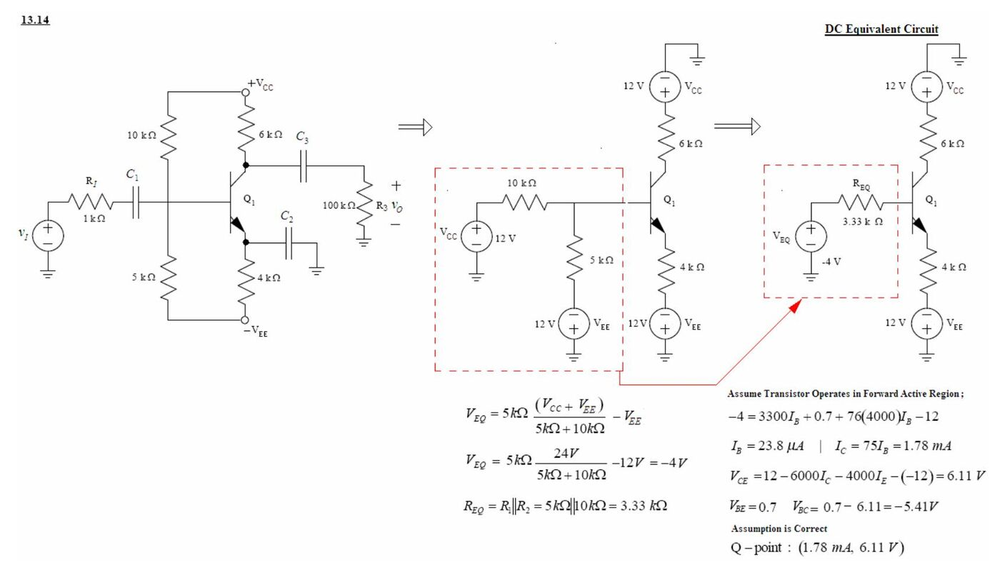
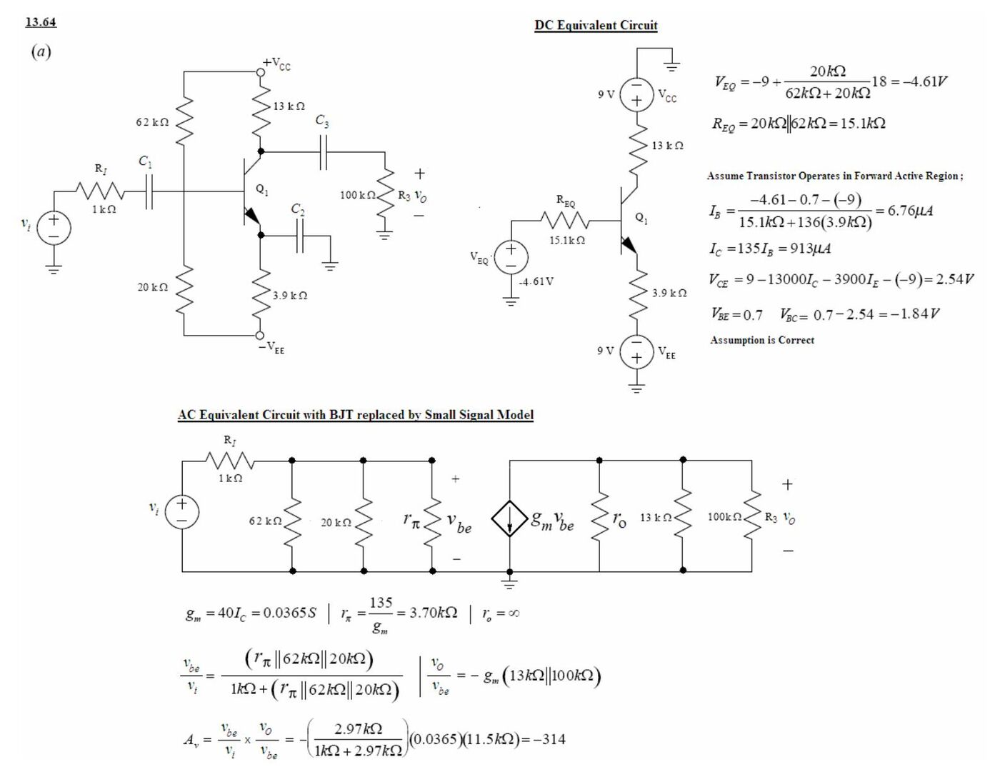
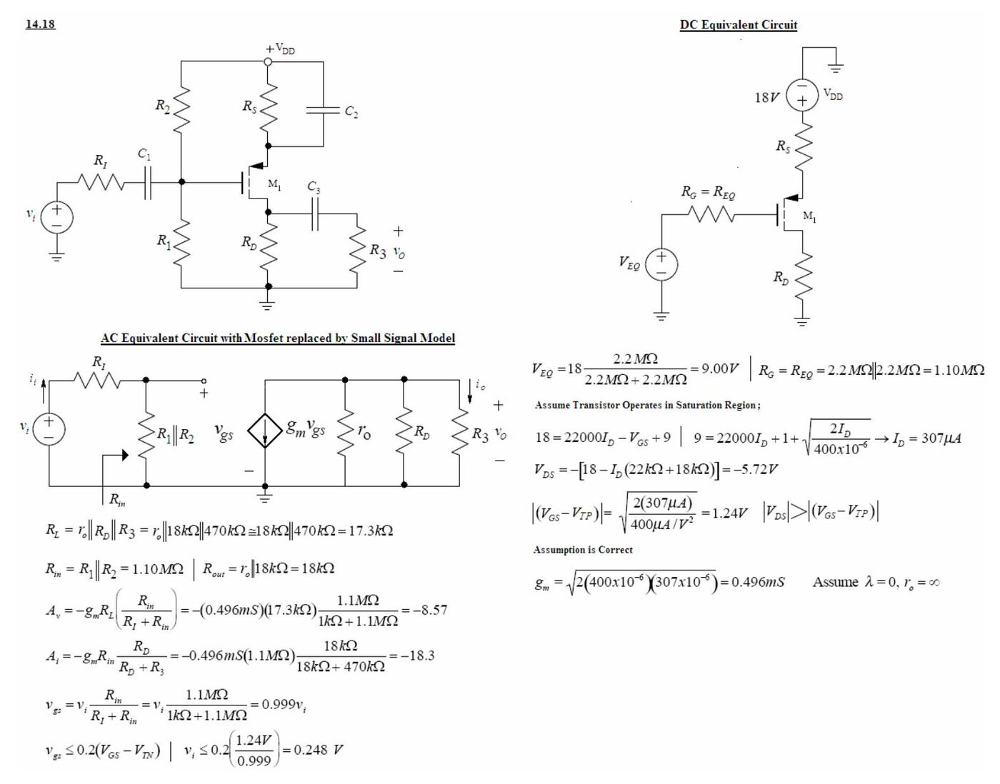
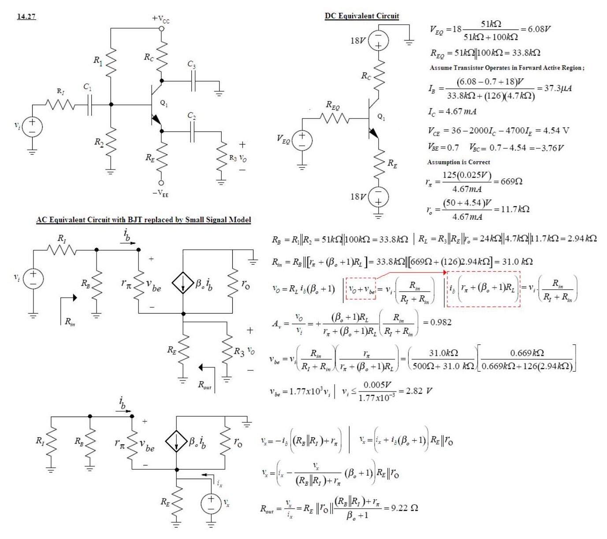
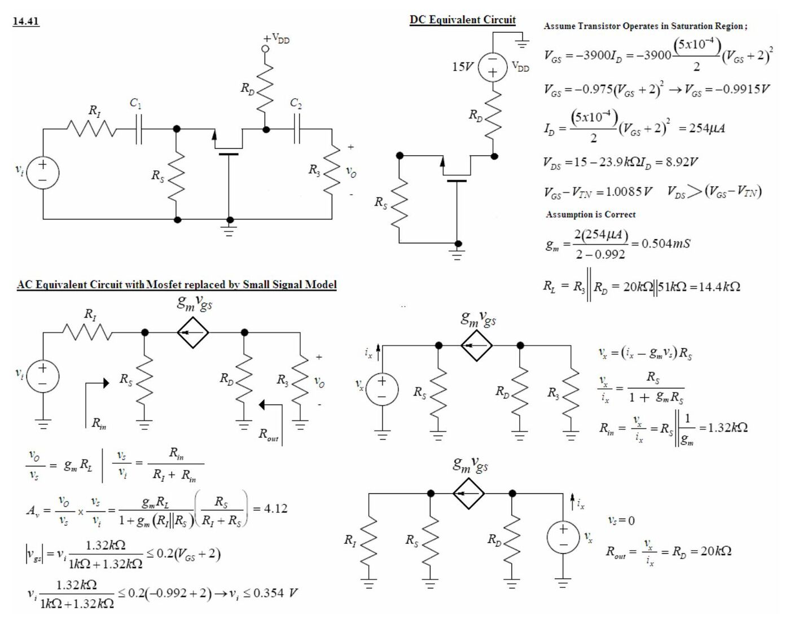

· EEM311
EEM311 Elektronik II: 2005 Ödev Çözümleri I–III, BJT ve MOSFET Yükselteçlerinin Q Noktası, Küçük Sinyal Modeli ve Kazancı
EEM311 – Elektronik II · 11.10.2005 · 16.10.2026
Bu yazı, Başkent Üniversitesi EEM311 Elektronik II dersinin 2005 güz dönemindeki ilk üç ödevinin çözümlerini içeriyor (Ödev I: 11 Ekim 2005, Ödev II: 14 Ekim 2005, Ödev III: 24 Ekim 2005). Problemler dersin kitabı Jaeger & Blalock, Microelectronic Circuit Design'dan; çözümler dersin asistanı tarafından Word'de devre şemalarıyla hazırlanmış. Orijinal dosyalar parolalıydı; parolası kaldırılmış PDF'ler yazının sonunda ZIP olarak indirilebilir. Ödev IV ve V ayrı bir yazıda: EEM311 2005 Ödev Çözümleri IV–V.
Çözümlerde ortak kabuller: V_BE = 0,7 V, V_T = 25 mV (g_m = 40·I_C), aksi belirtilmedikçe r_o = ∞. DC analizde kondansatörler açık devre, AC analizde kısa devre sayılıyor; baz/geçit bölücüsü Thévenin eşdeğerine (V_EQ, R_EQ) çevriliyor.
Ödev I
13.14: npn ortak emetör, ±12 V besleme (Q noktası)
Devre: V_CC = +12 V, V_EE = −12 V; baz bölücüsü 10 kΩ (V_CC'ye) ve 5 kΩ (−V_EE'ye), R_C = 6 kΩ, R_E = 4 kΩ (C₂ ile köprülenmiş), R_I = 1 kΩ, yük R₃ = 100 kΩ; β_F = 75.

- V_EQ = 5 kΩ·(V_CC + V_EE)/(5 kΩ + 10 kΩ) − V_EE = 5 kΩ·24 V/15 kΩ − 12 V = −4 V
- R_EQ = 5 kΩ ∥ 10 kΩ = 3,33 kΩ
- İleri aktif bölge kabulüyle: −4 = 3300·I_B + 0,7 + 76·(4000)·I_B − 12
- I_B = 23,8 µA, I_C = 75·I_B = 1,78 mA
- V_CE = 12 − 6000·I_C − 4000·I_E − (−12) = 6,11 V; V_BC = 0,7 − 6,11 = −5,41 V → kabul doğru.
- Q noktası: (1,78 mA; 6,11 V)
13.18: pnp ortak emetör, tek besleme (Q noktası)
Devre: V_CC = 9 V; baz bölücüsü 20 kΩ (V_CC'ye) ve 62 kΩ (toprağa); emetörde 3,9 kΩ (C₂ ile köprülenmiş, V_CC'ye), kolektörde 13 kΩ (toprağa); R_I = 1 kΩ, R₃ = 100 kΩ; β_F = 135.
- V_EQ = 9 V·62 kΩ/(62 kΩ + 20 kΩ) = 6,80 V, R_EQ = 62 kΩ ∥ 20 kΩ = 15,1 kΩ
- 9 = 3900·(136)·I_B + 0,7 + 15 100·I_B + 6,80
- I_B = 2,75 µA, I_C = 135·I_B = 371 µA, I_E = 374 µA
- V_EC = 9 − 3900·I_E − 13 000·I_C = 2,72 V; V_CB = 0,7 − 2,72 = −2,02 V → kabul doğru.
- Q noktası: (371 µA; 2,72 V)
13.20: n kanallı MOSFET, ortak kaynak (Q noktası)
Devre: V_DD = 15 V; geçit bölücüsü 2,7 MΩ ve 1 MΩ, R_D = 82 kΩ, R_S = 27 kΩ (C₂ ile köprülenmiş), R_I = 1 kΩ; K_n = 0,25 mA/V², V_TN = 1 V.
- V_EQ = 15 V·1 MΩ/(1 MΩ + 2,7 MΩ) = 4,05 V, R_EQ = 1 MΩ ∥ 2,7 MΩ = 730 kΩ
- Doyma kabulüyle: I_D = (0,25 mA/2)·(V_GS − 1)², V_GS = 4,05 − 27 000·I_D
- I_D = 0,125 mA·(3,05 − 27 000·I_D)² → I_D = 82,2 µA
- V_DS = 15 − 82 000·I_D − 27 000·I_D = 6,04 V; V_GS − V_TN = 0,84 V < V_DS → kabul doğru.
- Q noktası: (82,2 µA; 6,04 V)
Not: İkinci dereceden denklemin tam çözümü I_D ≈ 82,8 µA, V_DS ≈ 5,97 V ve V_GS − V_TN ≈ 0,81 V verir; farkı yuvarlamadan geliyor, sonuç (doyma bölgesi) değişmez.
13.64 (a): npn ortak emetör, ±9 V, gerilim kazancı
Devre: V_CC = +9 V, V_EE = −9 V; baz bölücüsü 62 kΩ (V_CC'ye) ve 20 kΩ (−V_EE'ye); R_C = 13 kΩ, R_E = 3,9 kΩ (C₂ ile köprülenmiş); R_I = 1 kΩ, R₃ = 100 kΩ; β_F = 135.

- V_EQ = −9 + 18·20 kΩ/(62 kΩ + 20 kΩ) = −4,61 V, R_EQ = 15,1 kΩ
- I_B = (−4,61 − 0,7 − (−9))/(15,1 kΩ + 136·3,9 kΩ) = 6,76 µA, I_C = 135·I_B = 913 µA
- V_CE = 9 − 13 000·I_C − 3900·I_E − (−9) = 2,54 V; V_BC = −1,84 V → kabul doğru.
- Küçük sinyal: g_m = 40·I_C = 0,0365 S, r_π = 135/g_m = 3,70 kΩ, r_o = ∞
- v_be/v_i = (r_π ∥ 62 kΩ ∥ 20 kΩ)/(1 kΩ + r_π ∥ 62 kΩ ∥ 20 kΩ), v_o/v_be = −g_m·(13 kΩ ∥ 100 kΩ)
- A_v = −(2,97 kΩ/(1 kΩ + 2,97 kΩ))·(0,0365)·(11,5 kΩ) = −314
13.64 (b): Aynı devrenin pnp sürümü (V_CC = 18 V)
Devre: V_CC = 18 V; baz bölücüsü 20 kΩ (V_CC'ye) ve 62 kΩ (toprağa); emetörde 3,9 kΩ (köprülenmiş), kolektörde 13 kΩ.
- V_EQ = 18 V·62 kΩ/(62 kΩ + 20 kΩ) = 13,6 V, R_EQ = 15,1 kΩ
- 18 = 3900·(136)·I_B + 0,7 + 15 100·I_B + 13,6 → I_B = 6,76 µA, I_C = 913 µA
- V_EC = 18 − 3900·I_E − 13 000·I_C = 2,54 V; V_CB = −1,84 V → kabul doğru.
- Q noktası (a) şıkkıyla aynı olduğundan küçük sinyal parametreleri ve kazanç da aynı: g_m = 0,0365 S, r_π = 3,70 kΩ, A_v = −314.
13.102: MOSFET ortak kaynak, r_o dahil kazanç
Devre: R_I = 100 kΩ, geçit direnci 6,8 MΩ, R_D = 50 kΩ, R₃ = 120 kΩ; I_D = 100 µA, V_DS = 5 V, K_n = 500 µA/V², λ = 0,02 V⁻¹.
- g_m = √(2K_n·I_D·(1 + λV_DS)) = √(2·500 µA/V²·100 µA·(1 + 0,02·5)) = 332 µS
- r_o = (1/λ + V_DS)/I_D = (50 + 5 V)/100 µA = 550 kΩ
- v_gs/v_i = 6,8 MΩ/(6,8 MΩ + 0,1 MΩ), v_o/v_gs = −g_m·(r_o ∥ 50 kΩ ∥ 120 kΩ)
- A_v = −(6,8/6,9)·(332 µS)·(550 kΩ ∥ 50 kΩ ∥ 120 kΩ) = −10,9
Ödev II
14.8: Ortak kaynak, R_S köprülü ve köprüsüz
Devre: R_I = 75 kΩ, R_G = 1 MΩ, R_S = 200 Ω, R_L = 2 kΩ; g_m = 0,005 S, r_o = 10 kΩ.
(a) R_S köprülenmemiş, r_o ihmal:
- v_o/v_gs = −g_m·R_L, v_gs/v_i = R_G/((R_I + R_G)(1 + g_m·R_S))
- A_v = −1 MΩ·(0,005 S)·(2000 Ω)/((75 kΩ + 1 MΩ)·(1 + 0,005·200)) = −4,65
- i_o = −g_m·v_gs, i_i = (v_gs + g_m·v_gs·R_S)/R_G → A_i = −R_G·g_m/(1 + g_m·R_S) = −2500
- r_o dahil çıkış direnci: R_out = r_o·(1 + g_m·R_S) = 10 kΩ·(1 + 0,005·200) = 20,0 kΩ; R_in = R_G = 1 MΩ
(b) R_S köprülü:
- A_v = −g_m·(R_L ∥ r_o)·R_G/(R_I + R_G) = −(0,005)·(2 kΩ ∥ 10 kΩ)·(1 MΩ/1,075 MΩ) = −7,75
- R_in = R_G = 1 MΩ, R_out = r_o = 10,0 kΩ
- A_i = −R_G·g_m = −5000
14.10: Emetör direnci bölünmüş ortak emetör
Devre: ±12 V, R_C = 8,2 kΩ, yük 47 kΩ, emetörde seri 330 Ω + 680 Ω (−12 V'a); r_o ihmal. R_L = 8,2 kΩ ∥ 47 kΩ, R_E = R_E1 + R_E2.
- (a) A_v = −β_o·R_L/(r_π + (β_o + 1)R_E); β_o büyükse A_v ≅ −R_L/R_E = −(8,2 kΩ ∥ 47 kΩ)/(330 Ω + 680 Ω) = −6,91
- (b) 330 Ω'a paralel köprüleme kondansatörü: A_v ≅ −(8,2 kΩ ∥ 47 kΩ)/680 Ω = −10,3
- (c) 680 Ω'a paralel köprüleme kondansatörü: A_v ≅ −(8,2 kΩ ∥ 47 kΩ)/330 Ω = −21,2
- (d) Emetörden toprağa köprüleme kondansatörü konur.
- (e) Bu durumda A_v ≅ −10·(V_CC + V_EE) = −240 (kitabın 13.6.3 bölümündeki kaba kural).
14.11: Giriş direnci 500 kΩ ve kazancı −10 olan tasarım
Kaynak direnci 100 kΩ, β_o = 75; istenen R_in = 500 kΩ ve A_vt = −10.
- R_in = r_π + (β_o + 1)R_E = 500 kΩ
- A_vt = −β_o·R_L/(r_π + (β_o + 1)R_E) = −75·R_L/500 kΩ = −10 → R_L = 66,7 kΩ
- (β_o + 1)R_E ≫ r_π kabulüyle R_E ≅ 500 kΩ/76 = 6,58 kΩ
14.18: p kanallı MOSFET ortak kaynak
Devre: V_DD = 18 V; geçit bölücüsü R₁ = R₂ = 2,2 MΩ; R_S = 22 kΩ (köprülü), R_D = 18 kΩ, R₃ = 470 kΩ, R_I = 1 kΩ; K_p = 400 µA/V², V_TP = −1 V, λ = 0.

- V_EQ = 18·2,2 MΩ/(2,2 MΩ + 2,2 MΩ) = 9,00 V, R_G = 2,2 MΩ ∥ 2,2 MΩ = 1,10 MΩ
- Doyma kabulü: 9 = 22 000·I_D + 1 + √(2I_D/400 µA/V²) → I_D = 307 µA
- V_DS = −[18 − I_D·(22 kΩ + 18 kΩ)] = −5,72 V; |V_GS − V_TP| = 1,24 V < |V_DS| → kabul doğru.
- g_m = √(2·400 µA/V²·307 µA) = 0,496 mS
- R_L = r_o ∥ 18 kΩ ∥ 470 kΩ = 17,3 kΩ, R_in = R₁ ∥ R₂ = 1,10 MΩ, R_out = 18 kΩ
- A_v = −g_m·R_L·R_in/(R_I + R_in) = −(0,496 mS)(17,3 kΩ)(1,1 MΩ/1,101 MΩ) = −8,57
- A_i = −g_m·R_in·R_D/(R_D + R₃) = −0,496 mS·1,1 MΩ·18 kΩ/(18 kΩ + 470 kΩ) = −18,3 (kaynakta)
- Küçük sinyal sınırı: v_gs ≤ 0,2(V_GS − V_TP) → v_i ≤ 0,2·(1,24 V/0,999) = 0,248 V
Not: Akım kazancı ifadesine sayılar konunca −0,496 mS·1,1 MΩ·(18/488) ≈ −20,1 çıkıyor; kaynaktaki −18,3 hesap hatası.
14.21: Endüktanslı kolektörlü ortak emetör
Devre: V_CC = V_EE = 10 V; kolektör V_CC'ye L bobiniyle bağlı, baz R_B = 20 kΩ ile toprakta, R_E = 9,1 kΩ (köprülü, −V_EE'ye); R_I = 250 Ω, R₃ = 1 MΩ; β_o = 80, V_A = 100 V.
- I_B = (V_EE − V_BE)/(R_B + (β_o + 1)R_E) = (10 − 0,7)/(20 kΩ + 81·9,1 kΩ) = 12,3 µA
- I_C = 983 µA, V_CE = (V_CC + V_EE) − R_E·I_E = 20 − 9100·I_E = 11,0 V → ileri aktif.
- r_π = 80·(0,025 V)/983 µA = 2,04 kΩ, r_o = (100 + 11,0 V)/983 µA = 113 kΩ
- R_L = r_o ∥ 1 MΩ = 102 kΩ, R_in = R_B ∥ r_π = 1,85 kΩ, R_out = r_o = 113 kΩ
- A_v = −g_m·R_L·R_in/(R_I + R_in) = −40(983 µA)(102 kΩ)·1,85 kΩ/(250 Ω + 1,85 kΩ) = −3530
- A_i = −80·(20 kΩ/(20 kΩ + 2,04 kΩ))·(113 kΩ/(113 kΩ + 1 MΩ)) = −7,37
- Küçük sinyal sınırı (v_be ≤ 5 mV): kaynakta v_be = v_i·20 kΩ/(250 Ω + 20 kΩ) = 0,988·v_i → v_i ≤ 5,06 mV
Not: v_be/v_i oranında R_in = R_B ∥ r_π = 1,85 kΩ kullanılmalıydı (formül de öyle yazılmış ama yerine R_B = 20 kΩ konmuş): v_be = 1,85/(0,25 + 1,85)·v_i = 0,881·v_i, dolayısıyla v_i ≤ 5 mV/0,881 ≈ 5,68 mV.
Ödev III
14.27: Ortak kolektör (emetör izleyici)
Devre: ±18 V; R₁ = 100 kΩ, R₂ = 51 kΩ, R_C = 2 kΩ (köprülü), R_E = 4,7 kΩ, yük R₃ = 24 kΩ, R_I = 500 Ω; β_F = 125, V_A = 50 V.

- V_EQ = 18·51 kΩ/(51 kΩ + 100 kΩ) = 6,08 V, R_EQ = 51 kΩ ∥ 100 kΩ = 33,8 kΩ
- I_B = (6,08 − 0,7 + 18)/(33,8 kΩ + 126·4,7 kΩ) = 37,3 µA, I_C = 4,67 mA
- V_CE = 36 − 2000·I_C − 4700·I_E = 4,54 V → ileri aktif.
- r_π = 125·(0,025)/4,67 mA = 669 Ω, r_o = (50 + 4,54)/4,67 mA = 11,7 kΩ
- R_L = R₃ ∥ R_E ∥ r_o = 24 kΩ ∥ 4,7 kΩ ∥ 11,7 kΩ = 2,94 kΩ
- R_in = R_B ∥ [r_π + (β_o + 1)R_L] = 33,8 kΩ ∥ [669 Ω + 126·2,94 kΩ] = 31,0 kΩ
- A_v = (β_o + 1)R_L/(r_π + (β_o + 1)R_L) · R_in/(R_I + R_in) = 0,982
- v_be = v_i·(31,0/31,5)·(0,669/(0,669 + 126·2,94)) = 1,77·10⁻³·v_i → v_be ≤ 5 mV için v_i ≤ 2,82 V
- R_out = R_E ∥ r_o ∥ ((R_B ∥ R_I) + r_π)/(β_o + 1) = 9,22 Ω
14.41: Ortak geçitli (fakirleştirmeli NMOS) yükselteç
Devre: V_DD = 15 V; R_S = 3,9 kΩ, R_D = 20 kΩ, R₃ = 51 kΩ, R_I = 1 kΩ; K_n = 0,5 mA/V², V_TN = −2 V (geçit toprakta).
- Doyma kabulü: V_GS = −3900·I_D = −3900·(5·10⁻⁴/2)(V_GS + 2)² → V_GS = −0,975(V_GS + 2)² → V_GS = −0,9915 V
- I_D = (5·10⁻⁴/2)(V_GS + 2)² = 254 µA, V_DS = 15 − 23,9 kΩ·I_D = 8,92 V; V_GS − V_TN = 1,0085 V → kabul doğru.
- g_m = 2(254 µA)/(2 − 0,992) = 0,504 mS
- R_L = R₃ ∥ R_D = 20 kΩ ∥ 51 kΩ = 14,4 kΩ
- R_in = R_S ∥ (1/g_m) = 1,32 kΩ, R_out = R_D = 20 kΩ
- A_v = g_m·R_L/(1 + g_m(R_I ∥ R_S)) · R_S/(R_I + R_S) = 4,12
- Küçük sinyal sınırı: v_i·1,32/(1 + 1,32) ≤ 0,2(−0,992 + 2) → v_i ≤ 0,354 V

Soru 3: Girişin emetörden, çıkışın bazdan alındığı devre
Devre: pnp transistör; kolektör R_C ile −V_CC'ye bağlı ve C₁ ile AC topraklanmış; emetör R_E ile +V_EE'ye bağlı, giriş v_i (R_I ve C₂ üzerinden) emetöre uygulanıyor; çıkış bazdan C₃ ile R₃'e alınıyor, baz R_B ile toprakta.
The voltage gain is approximately 0, because the signal is removed from amplifier at the base terminal which makes the amplifier not useful.
Yani gerilim kazancı yaklaşık sıfırdır: sinyal yükseltecin bazından alındığı için devre yükselteç olarak işe yaramaz.